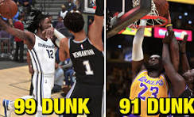

Driving dunk is a VERY important attribute to most people who play the game because dunking is almost garunteed if your dunk rating is higher than 90
Almost every position makes their driving dunk high enough to do "contact dunks" and when you do contact dunks they are very hard to counter.The only positions that have driving dunk lower are Centers and Point gaurds.